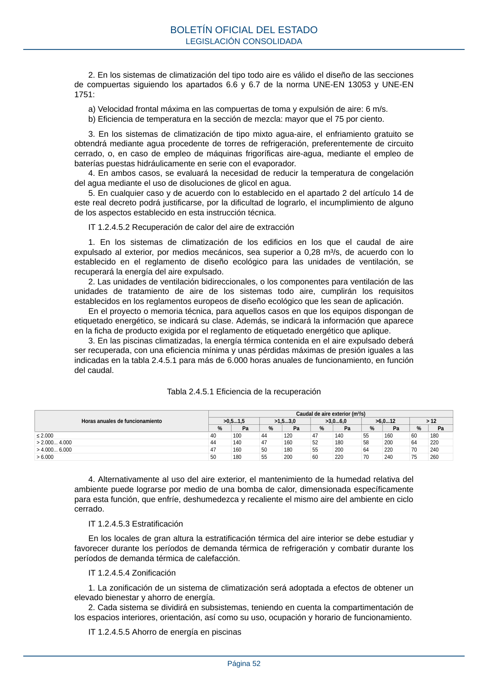

DB-HE2 RITE · edición 2022-08-02 · capa asociada
Documento RITE-asociada · SHA-256 del PDF ad1680c83bf4c7f5c656af1794c32ad0669ad9f36ac293737ff3f95177ff7b26
Página física 52 de 97.
Copia fiel del PDF fuente · Fuente oficial
Ficha de la disposición en la fuente oficial
Texto extraído y reorganizado: Basado en datos de la Agencia Estatal Boletín Oficial del Estado. PDF reproducido: Fuente de los datos: Agencia Estatal Boletín Oficial del Estado.
Formato: Texto de la página (Markdown)
2. En los sistemas de climatización del tipo todo aire es válido el diseño de las secciones de compuertas siguiendo los apartados 6.6 y 6.7 de la norma UNE-EN 13053 y UNE-EN 1751: a) Velocidad frontal máxima en las compuertas de toma y expulsión de aire: 6 m/s. b) Eficiencia de temperatura en la sección de mezcla: mayor que el 75 por ciento. 3. En los sistemas de climatización de tipo mixto agua-aire, el enfriamiento gratuito se obtendrá mediante agua procedente de torres de refrigeración, preferentemente de circuito cerrado, o, en caso de empleo de máquinas frigoríficas aire-agua, mediante el empleo de baterías puestas hidráulicamente en serie con el evaporador. 4. En ambos casos, se evaluará la necesidad de reducir la temperatura de congelación del agua mediante el uso de disoluciones de glicol en agua. 5. En cualquier caso y de acuerdo con lo establecido en el apartado 2 del artículo 14 de este real decreto podrá justificarse, por la dificultad de lograrlo, el incumplimiento de alguno de los aspectos establecido en esta instrucción técnica. IT 1.2.4.5.2 Recuperación de calor del aire de extracción 1. En los sistemas de climatización de los edificios en los que el caudal de aire expulsado al exterior, por medios mecánicos, sea superior a 0,28 m³/s, de acuerdo con lo establecido en el reglamento de diseño ecológico para las unidades de ventilación, se recuperará la energía del aire expulsado. 2. Las unidades de ventilación bidireccionales, o los componentes para ventilación de las unidades de tratamiento de aire de los sistemas todo aire, cumplirán los requisitos establecidos en los reglamentos europeos de diseño ecológico que les sean de aplicación. En el proyecto o memoria técnica, para aquellos casos en que los equipos dispongan de etiquetado energético, se indicará su clase. Además, se indicará la información que aparece en la ficha de producto exigida por el reglamento de etiquetado energético que aplique. 3. En las piscinas climatizadas, la energía térmica contenida en el aire expulsado deberá ser recuperada, con una eficiencia mínima y unas pérdidas máximas de presión iguales a las indicadas en la tabla 2.4.5.1 para más de 6.000 horas anuales de funcionamiento, en función del caudal. Tabla 2.4.5.1 Eficiencia de la recuperación Horas anuales de funcionamiento Caudal de aire exterior (m³/s) >0,5...1,5 >1,5...3,0 >3,0...6,0 >6,0...12 > 12 % Pa % Pa % Pa % Pa % Pa ≤ 2.000 40 100 44 120 47 140 55 160 60 180 > 2.000... 4.000 44 140 47 160 52 180 58 200 64 220 > 4.000... 6.000 47 160 50 180 55 200 64 220 70 240 > 6.000 50 180 55 200 60 220 70 240 75 260 4. Alternativamente al uso del aire exterior, el mantenimiento de la humedad relativa del ambiente puede lograrse por medio de una bomba de calor, dimensionada específicamente para esta función, que enfríe, deshumedezca y recaliente el mismo aire del ambiente en ciclo cerrado. IT 1.2.4.5.3 Estratificación En los locales de gran altura la estratificación térmica del aire interior se debe estudiar y favorecer durante los períodos de demanda térmica de refrigeración y combatir durante los períodos de demanda térmica de calefacción. IT 1.2.4.5.4 Zonificación 1. La zonificación de un sistema de climatización será adoptada a efectos de obtener un elevado bienestar y ahorro de energía. 2. Cada sistema se dividirá en subsistemas, teniendo en cuenta la compartimentación de los espacios interiores, orientación, así como su uso, ocupación y horario de funcionamiento. IT 1.2.4.5.5 Ahorro de energía en piscinas BOLETÍN OFICIAL DEL ESTADO LEGISLACIÓN CONSOLIDADA Página 52

Datos candidatos: compruebe celdas y notas en el PDF.